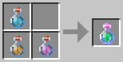
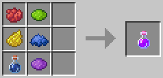
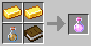

Jack's Alchemy Recipes & Info
Contact me on discord (JackJack33#6425) if you need to report a bug
or need help with anything else regarding this script.
Additionally, you can join the Cosmos Discord, which is a server
run by myself, fjsu, and Santio71. However please do not send them DM's regarding
this script, it is not their responsibility :)!
Here are all of the default potions.
Admins can use /viewpotions to view/get potion items

Ingredient Potions
These potions give no effects
- Water + Bonemeal + Glowstone Dust → Electrolytic Solution
- Water + Blaze Powder + Gunpowder → Oil of Vitriol
- Water + Chorus Fruit + Redstone Dust → Volatilium


Teleportation Potions
Recall potion teleports you to your bed if you have one set. Return potion teleports
you to your last death location, but can only be used once per location.
- Water + Ender Pearl + Sugar → Recall Potion
- Water + Ender Pearl + 3x Bone → Return Potion

Movement Potions
Each of these potions lasts 90 seconds, and will provide
the player with the ability to walk on their respective liquids.
- Water + Scute + 2x Lily Pad → Water Walking Potion
- Water + Crying Obsidian + Fire Charge → Lava Walking Potion


Effect Potions
These potions will give an effect or multiple effects.
- Electrolytic Solution + Sugar + 2x Glowstone Dust → Shine Potion
- Electrolytic Solution + Sugar + Glowstone Dust + Gold Ingot → Absorption Potion
- Volatilium + Slimeball + Rabbit Foot + Gold Ingot + Crying Obsidian → Titan Potion
- Electrolytic Solution + Oil of Vitriol + Volatilium → Veridi Potion

Radial Potions
Each potion will create an effect in a radius for 90 seconds,
such as lighting entities on fire in a 8 block radius.
- Oil of Vitriol + Blaze Powder + Gunpowder + Fire Charge → Inferno Potion
- Oil of Vitriol + Flint + Arrow + Gunpowder → Hunter Potion
- Oil of Vitriol + String + Slimeball + Bone → Candle Potion
Loot Potions
Drinking these potions will affect block/entity drops for 90 seconds.
- Water + Red Dye + Yellow Dye + Lime Dye + Blue Dye + Purple Dye → Rainbow Potion
- Electrolytic Solution + Glowstone + Gold Ingot + Wheat + Carrot → Farming Potion
- Oil of Vitriol + Book + 2x Gold Ingot → Midas Potion


Other
Other potions that don't fit into a category at the moment, 90 second duration.
- Oil of Vitriol + Crimson Fungus + Bone + Gunpowder → Lifesteal Potion